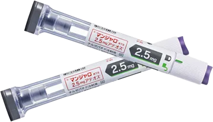
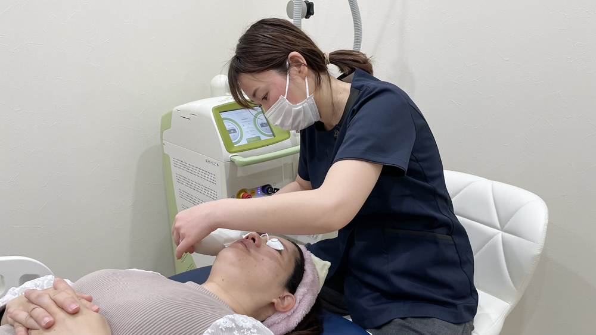
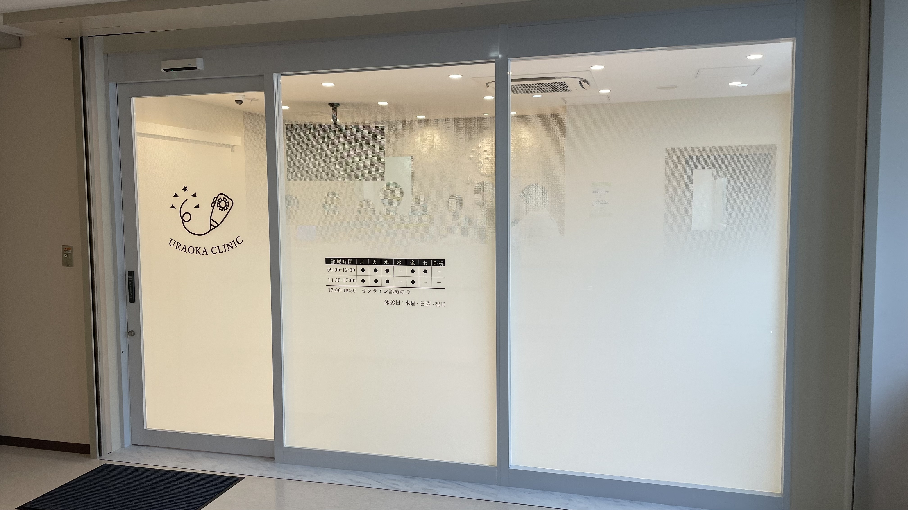
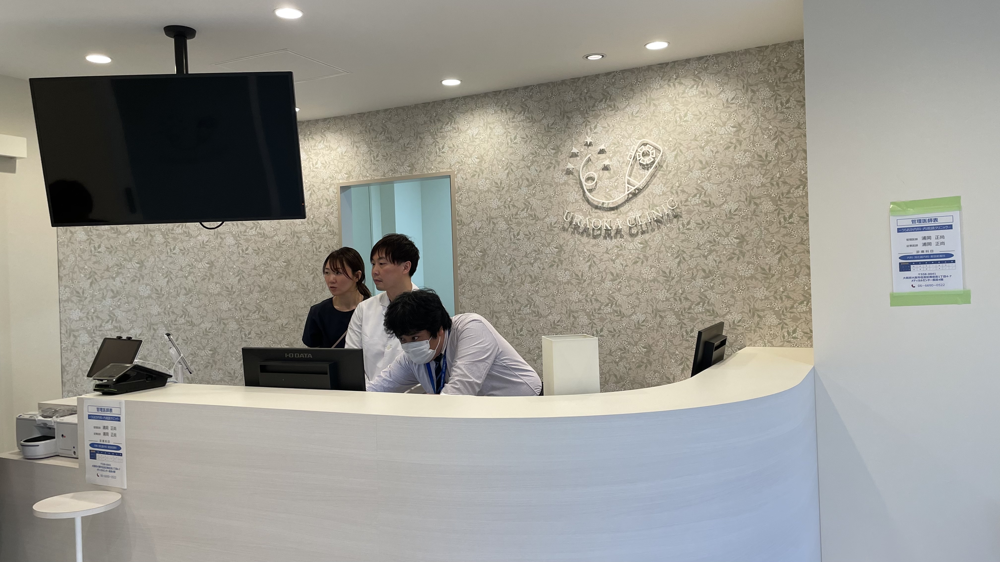
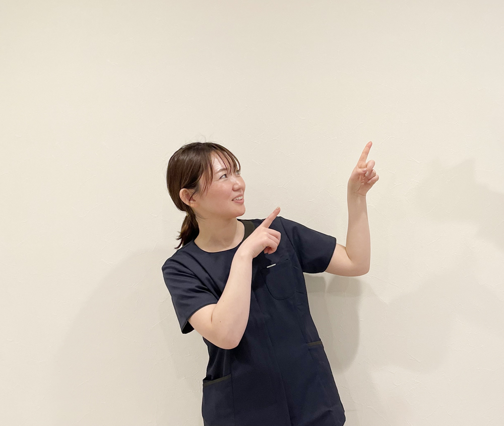

薬が効くメカニズム
マンジャロはなぜ、
痩せられるのか
GIPとGLP-1という2つのホルモンに同時に作用し、自然な形で食欲と体重をコントロールします。
食欲が
自然に落ち着く
脳の食欲中枢に直接作用し、「食べたい」という欲求を自然に抑制。無理に我慢するストレスがありません。
満腹感が
長続きする
胃の動きをゆっくりにし、少量の食事でも長く満腹感が持続。自然と食事量が減り、カロリーが抑えられます。
体重が
着実に減っていく
食欲抑制と満腹感持続の両方が働き、無理なく摂取カロリーが減少。体重が自然に・着実に減っていきます。
※ 効果には個人差があります。医師の診察・処方のもと使用します。
こんなお悩みを抱えていませんか？
一人で抱え込まないでください。
それは、あなただけではありません。
仕事や育児が忙しくて
運動する時間が取れない
食事制限を始めても
長続きしない・ストレスが溜まる
何度ダイエットしても
リバウンドを繰り返してしまう
健康診断で数値を指摘され
体重を何とかしなければと焦っている
メディカルダイエットに興味はあるが
どのクリニックが安全か不安
その悩みを解決します
メディカルダイエットとは
医学的根拠に基づいた、
新しいダイエットの形
メディカルダイエットとは、医師の管理のもとで行う医療的なアプローチによる体重管理です。食欲を司るホルモンに直接働きかけることで、無理な食事制限や激しい運動なしに体重減少をサポートします。
従来のダイエット
- ❌ 強い意志力が必要
- ❌ 食事を我慢し続ける
- ❌ 毎日の運動が必須
- ❌ リバウンドしやすい
- ❌ 続けられず挫折する
メディカルダイエット
- ✓ 食欲が自然に抑制される
- ✓ 無理な食事制限は不要
- ✓ 週1回の注射だけでOK
- ✓ 医学的根拠に基づいた効果
- ✓ 医師がサポートするから安心
臨床試験データ
数字が証明する、
マンジャロの効果
国内第III相臨床試験（SURMOUNT-J）72週時点のデータ。食事・運動療法のみとの比較。
出典：SURMOUNT-J試験（国内第III相臨床試験）72週時点・体重変化率（平均値）
体重減少効果（15mg使用時）
週1回の自己注射で続けやすい
臨床試験で実証された効果
※ 上記は国内承認申請時の臨床試験データです。個人差があり、すべての方に同様の効果を保証するものではありません。
※ 医師の診察・処方のもと、適切な用量で使用します。
当院が使用する薬剤
マンジャロ®（チルゼパチド）とは

GIPとGLP-1、ふたつのホルモン受容体に同時に作用する次世代の肥満症治療薬です。
「国内正規品」と「並行輸入品」は何が違うのか
- 品質・保管管理が不明確
- 国内基準の安全審査なし
- 偽造品・品質不明品の混入リスク
- 厚生労働省が注意喚起済み
- 副作用が出ても責任の所在が不明
- 国内医薬品メーカーより正規ルートで仕入れ
- 国内基準の品質・保管管理が徹底
- 製造から処方まで追跡可能
- 内科医が副作用にその場で対応
- 安心・安全の根拠がある
GIP・GLP-1デュアル作用
インクレチンホルモンであるGIPとGLP-1の両方の受容体に作用。食欲を自然に抑制し、血糖値のコントロールも同時にサポートします。
週1回の自己注射
専用のペン型デバイスで、週に1回自宅で注射するだけ。初回は医師がしっかり使い方をご説明しますので、ご安心ください。
肥満症治療薬として承認
マンジャロは日本において肥満症の効能・効果で承認された医薬品です。医師の処方のもと、適切に使用されます。
※ マンジャロ（チルゼパチド）は医師の診断・処方が必要な医療用医薬品です。効果には個人差があります。
選ばれる理由
うらおか内科・内視鏡クリニックが
選ばれる5つの理由

国内正規品のみを使用
使用する薬剤はすべて国内の医薬品メーカーより正規ルートで仕入れています。並行輸入品・個人輸入品は一切使用しません。厚労省が注意喚起するほど問題化している今、当院は安全の根拠をお示しします。
内科専門医による対面診察
オンラインではなく、内科専門医が直接診察します。既往症・服薬状況・体の状態を総合的に確認したうえで、安全に処方します。

長居駅から徒歩5分
地下鉄御堂筋線・長居駅から徒歩5分のアクセス良好な立地。メディカルセンター長居4階で通いやすく、継続しやすい環境を整えています。
副作用にも内科医として対応
万が一、吐き気などの副作用が出た場合も、内科医がその場で適切に対応します。注射後の体調管理まで、丁寧にサポートします。

明朗会計・追加費用なし
マンジャロ2.5mgは¥5,500/本（診察代込み）から。明朗会計で追加費用はありません。料金は診察前にすべてご提示します。
院長紹介
内科・消化器専門医が、
直接診察します。
経歴・資格
経歴
資格・専門
治療の流れ
はじめての方でも安心。
シンプルな3ステップ

WEB・お電話で予約
オンライン診察・来院予約ともにWEBから24時間お申し込みいただけます。お電話でのご予約も承っています。カウンセリングは無料です。
診察・カウンセリング
内科専門医が直接診察します。現在の健康状態・既往症・生活習慣などをヒアリングし、メディカルダイエットが適しているかを判断します。
処方・治療スタート
診察後、医師の判断のもと薬剤を処方します。自己注射の使い方を丁寧にご説明し、その日から治療を開始できます。
料金プラン
明朗会計。
追加費用は一切ありません。
すべての料金は事前にご提示します。診察時に予期しない追加費用は発生しません。
| 項目 | 料金（税込） | 備考 |
|---|---|---|
| 初診料・カウンセリング | 無 料 | 診察代込み |
|
マンジャロ 2.5mg 導入プラン・週1回注射 |
¥5,500/本 | 診察代込み ※2本より承ります |
|
マンジャロ 5mg 強化プラン・週1回注射 |
¥11,000/本 | 診察代込み ※2本より承ります |
| 血液検査（オプション） | ¥3,300/回 | 希望者のみ |
| ダイエット点滴（オプション） | ¥4,400/回 | 効果をさらにサポート |
※ 表示はすべて税込価格です。
※ 自費診療となります。健康保険は適用されません。
※ マンジャロは2本よりご購入いただけます。
※ 血液検査・ダイエット点滴は希望される方のみのオプションです。
安全性について
安心して治療を受けていただくために
⚠️ 主な副作用
吐き気、嘔吐、下痢、便秘などの消化器症状が現れることがあります。多くは使用開始直後に見られ、継続使用により軽快することがほとんどです。気になる症状がある場合は内科医にご相談ください。
🚫 治療を受けられない方
- 妊娠中・授乳中の方
- 18歳未満の方
- 重篤な膵疾患のある方
- 本剤成分にアレルギーのある方
- その他、医師が不適切と判断した方
📋 当院の安全への取り組み
- 使用薬剤はすべて国内正規品
- 内科医による対面診察を必須とする
- 副作用発生時も内科医が迅速に対応
- 定期的な経過確認と体調管理
よくあるご質問
気になる疑問に、
正直にお答えします。
マンジャロ（一般名：チルゼパチド）は、GIP（グルコース依存性インスリン分泌刺激ポリペプチド）とGLP-1（グルカゴン様ペプチド-1）のふたつのホルモン受容体に同時に作用する肥満症治療薬です。食欲を自然に抑制し、体重減少をサポートします。
国内の医薬品メーカーより正規ルートで購入した製品です。品質管理・保管管理が国内基準で徹底されており、安全性が確保されています。当院では国外からの直接仕入れは一切行っておらず、並行輸入品・個人輸入品は使用しません。
吐き気、嘔吐、下痢、便秘などの消化器症状が見られることがあります。多くの場合、使用開始直後に現れ、継続使用とともに軽快します。当院は内科医が在籍しているため、副作用が出た際もその場で対応可能です。気になる症状はすぐにご相談ください。
個人差がありますが、多くの方が1〜3ヶ月で体重の変化を実感されています。効果は食事・生活習慣にも影響するため、治療中も適切なアドバイスを行います。なお、効果を保証するものではありません。
マンジャロは自己注射型のペン型デバイスで、皮下に細い針で注射します。初回は医師・スタッフが丁寧に使い方をご説明しますので、ご自宅で安心してお使いいただけます。針が非常に細いため、痛みはほとんど感じない方が多いです。
治療終了後の生活習慣が体重維持の鍵となります。当院では治療中に食事・生活習慣の改善指導も行い、治療終了後も継続できる体づくりをサポートします。
メディカルダイエットは自由診療となります。健康保険は適用されません。費用については診察時に詳しくご説明します。
初回の診察・カウンセリングでご希望に合う治療プランをご提案し、問題がなければその日から治療を開始することができます。お急ぎの方はお気軽にご相談ください。
大きく3つの違いがあります。①薬剤：当院は国内正規品のみを使用しています。オンライン系クリニックの中には並行輸入品を使用しているケースがあり、品質管理が不明確な場合があります。②診察：当院では内科専門医が直接対面で診察します。③副作用対応：吐き気などが出た場合もその日に内科医が対応可能です。「安さ」より「安全性」を重視する方に選ばれています。
2本よりご購入いただけます。週1回の注射を2週続けていただく量となります。継続して治療を行う場合は、定期的にご来院いただき処方いたします。詳細は診察時にご説明します。
いずれも任意のオプションです。血液検査（¥3,300/回）は、治療前の健康状態の確認や、治療中の経過観察に役立てていただけます。ダイエット点滴（¥4,400/回）は、マンジャロの効果をさらにサポートしたい方にご提案しています。必須ではありませんので、ご希望に応じてご選択ください。
オンライン診察
遠方の方も、忙しい方も。
自宅からオンラインで受診できます。
スマートフォン・PCから予約・受診が完結。内科医が画面越しに診察し、薬剤をご自宅へお届けします。
自宅から受診
ビデオ通話で内科医が直接診察。アプリ不要、スマホ・PCからすぐ接続できます。
薬剤はご自宅へ郵送
処方後、薬剤をご自宅にお届け。クリニックへ通う手間なく治療を継続できます。
国内正規品を処方
来院診察と同じく、国内正規品のマンジャロのみを処方。品質に妥協はありません。
| 月・金 | 午後〜20:00 |
| 火 | 21:00〜23:30（夜間） |
| 水 | 午後〜17:00 |
| 木 | 休診 |
| 土 | 午後〜15:00 |
| 日・祝 | 休診 |
※ 火曜夜間は21:00〜23:30のみ対応 ※ 木・日・祝は休診
※ カウンセリング無料 ※ 完全予約制
アクセス・診療時間
長居駅から徒歩5分。
通いやすい立地です。
大阪府大阪市住吉区南住吉1-4-7
メディカルセンター長居 4F
| 月 | 火 | 水 | 木 | 金 | 土 | 日祝 | |
| 09:00〜18:30 | ○ | ○ | ○ | 休 | ○ | ※ | 休 |
※ 土曜は 09:00〜12:00 木曜・日曜・祝日は休診
まずは無料相談から
ひとりで悩まずに、
気軽にご相談ください。
カウンセリング無料。オンライン・来院どちらでも対応します。